← Índice de los 69 tutes de IDA
Tute 48 · LFH vs. heap estándar
se conecta con: Vulnerabilidades (defensivo)
INTRODUCCIÓN AL REVERSING CON IDA PRO DESDE CERO PARTE 48
ALLOCA EN LFH O HEAP ESTÁNDAR?
Trataremos de seguir una allocacion a ver si podemos entender la lógica de la misma y ver como dice si alloca en el LFH o en el HEAP ESTANDAR.
Seguiremos usando el ejecutable de la misma práctica.
Arrancamos el ejecutable fuera de IDA desde una consola, sin usar el script de Python
Ingresamos el numero que nos pide 1073741828 a mano, atacheamos el IDA con WINDBG como debugger, ponemos un breakpoint en el malloc y apretamos ENTER.
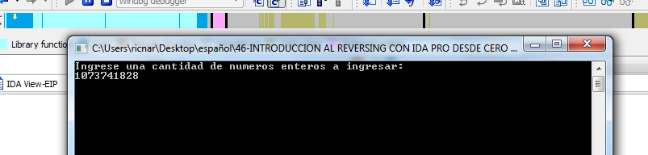
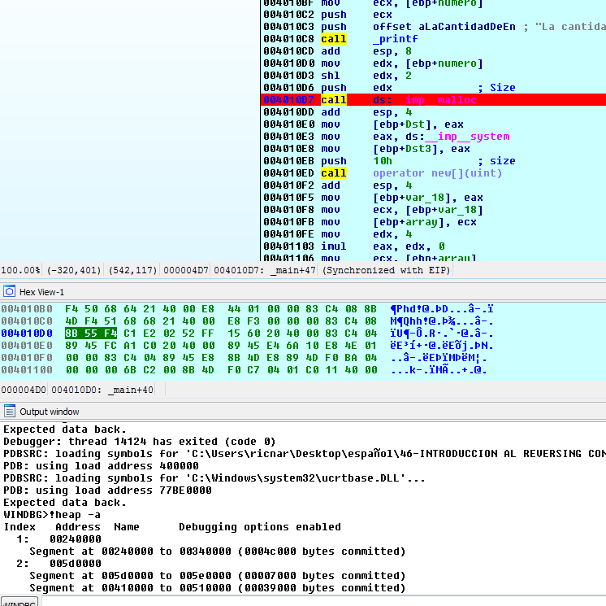
Si traceamos entrando en el malloc con f7 vemos que el size lo pasa a ESI, lo compara si es mas grande que 0xFFFFFFE0 como en nuestro caso es 0x10 no hay problema, lo pushea como argumento y ahí mismo vemos que pushea en mi caso 0x240000 que era uno de los heaps asi que ya sabemos que va a trabajar con ese.
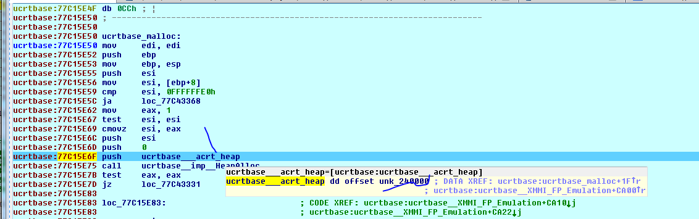
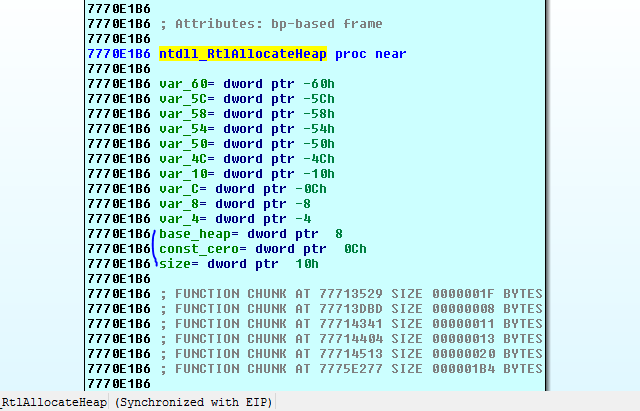
Ahí llegamos a podemos crear la función con click derecho - Create function y renombrar los argumentos que eran el size, un cero y la base del heap.
Aca esta la estructura del heap listada para poder copiar y pegar.
# +0x000 Entry : _HEAP_ENTRY
# +0x008 SegmentSignature : Uint4B
# +0x00c SegmentFlags : Uint4B
# +0x010 SegmentListEntry : _LIST_ENTRY
# +0x018 Heap : Ptr32 _HEAP
# +0x01c BaseAddress : Ptr32 Void
# +0x020 NumberOfPages : Uint4B
# +0x024 FirstEntry : Ptr32 _HEAP_ENTRY
# +0x028 LastValidEntry : Ptr32 _HEAP_ENTRY
# +0x02c NumberOfUnCommittedPages : Uint4B
# +0x030 NumberOfUnCommittedRanges : Uint4B
# +0x034 SegmentAllocatorBackTraceIndex : Uint2B
# +0x036 Reserved : Uint2B
# +0x038 UCRSegmentList : _LIST_ENTRY
# +0x040 Flags : Uint4B
# +0x044 ForceFlags : Uint4B
# +0x048 CompatibilityFlags : Uint4B
# +0x04c EncodeFlagMask : Uint4B
# +0x050 Encoding : _HEAP_ENTRY
# +0x058 PointerKey : Uint4B
# +0x05c Interceptor : Uint4B
# +0x060 VirtualMemoryThreshold : Uint4B
# +0x064 Signature : Uint4B
# +0x068 SegmentReserve : Uint4B
# +0x06c SegmentCommit : Uint4B
# +0x070 DeCommitFreeBlockThreshold : Uint4B
# +0x074 DeCommitTotalFreeThreshold : Uint4B
# +0x078 TotalFreeSize : Uint4B
# +0x07c MaximumAllocationSize : Uint4B
# +0x080 ProcessHeapsListIndex : Uint2B
# +0x082 HeaderValidateLength : Uint2B
# +0x084 HeaderValidateCopy : Ptr32 Void
# +0x088 NextAvailableTagIndex : Uint2B
# +0x08a MaximumTagIndex : Uint2B
# +0x08c TagEntries : Ptr32 _HEAP_TAG_ENTRY
# +0x090 UCRList : _LIST_ENTRY
# +0x098 AlignRound : Uint4B
# +0x09c AlignMask : Uint4B
# +0x0a0 VirtualAllocdBlocks : _LIST_ENTRY
# +0x0a8 SegmentList : _LIST_ENTRY
# +0x0b0 AllocatorBackTraceIndex : Uint2B
# +0x0b4 NonDedicatedListLength : Uint4B
# +0x0b8 BlocksIndex : Ptr32 Void
# +0x0bc UCRIndex : Ptr32 Void
# +0x0c0 PseudoTagEntries : Ptr32 _HEAP_PSEUDO_TAG_ENTRY
# +0x0c4 FreeLists : _LIST_ENTRY
# +0x0cc LockVariable : Ptr32 _HEAP_LOCK
# +0x0d0 CommitRoutine : Ptr32 long
# +0x0d4 FrontEndHeap : Ptr32 Void
# +0x0d8 FrontHeapLockCount : Uint2B
# +0x0da FrontEndHeapType : UChar
# +0x0dc Counters : _HEAP_COUNTERS
# +0x130 TuningParameters : _HEAP_TUNING_PARAMETERS
No vamos a hacer las estructuras en IDA con todos los campos, solo crearemos una estructura vacía para renombrar solo los campos que usemos.
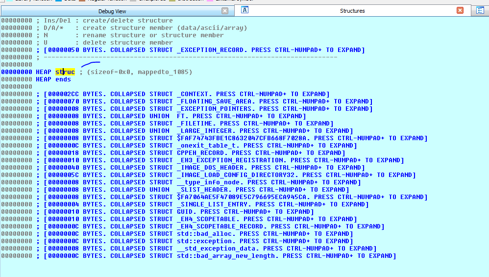
Ahí la cree en la pestaña estructuras con INSERTAR y luego la agrandare a 0x130 despues veré si necesito agrandarla mas.
Ya sabíamos como hacer esto le agrego un campo de un byte colocándome en el ends y apretando la tecla D y luego click derecho EXPAND y le agrego 0x12f.
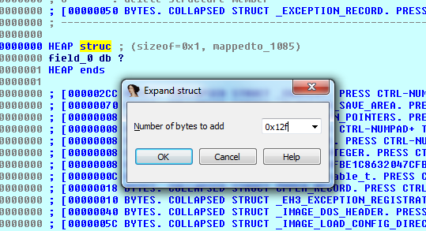
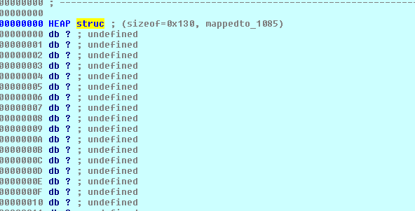
Allí quedo de 0x130 seguro será un poco más grande por el largo del último campo, pero ya veré.
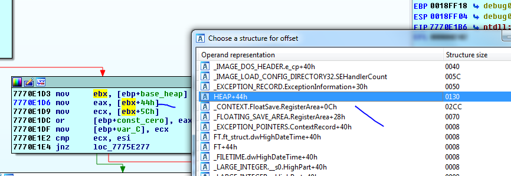
Allí usa el campo 44 y abajo el 5c apretando T en ambos elijo la estructura HEAP.
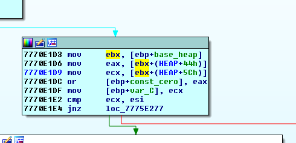
Ahora tengo que definir esos campos en la estructura.
# +0x044 ForceFlags : Uint4B
# +0x048 CompatibilityFlags : Uint4B
# +0x04c EncodeFlagMask : Uint4B
# +0x050 Encoding : _HEAP_ENTRY
# +0x058 PointerKey : Uint4B
# +0x05c Interceptor : Uint4B
Son dos campos de 4 bytes, los renombrare, voy a 0x44 y apreto la D hasta que cambia a DD.
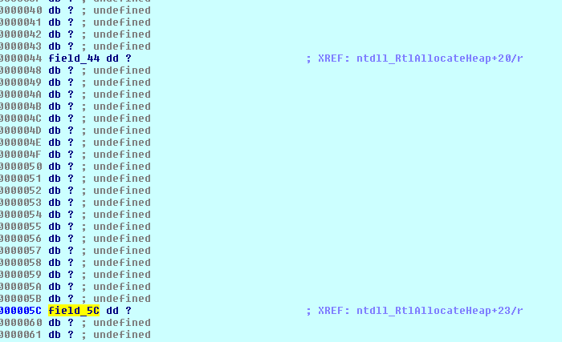
Y los renombro.
Bueno no tenemos ni idea de para qué sirve pero al menos quedo lindo jeje
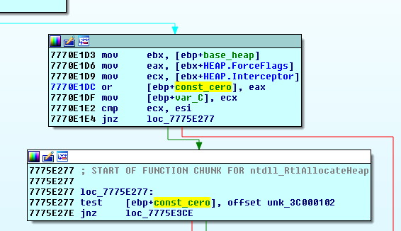
Obviamente no todos los campos ni todo lo que hace lo interpretaremos, pero iremos viendo que hace.
Una vez que traceamos hasta allí y EBX tomo el valor de la base del heap 240000 en mi caso puedo ir ahí y asignarle a esa dirección la estructura heap que, aunque por ahora está vacía algo tiene jeje.
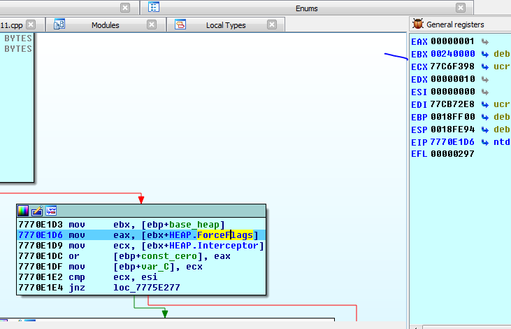
Con ALT más Q o Convert to struct variable del menú.
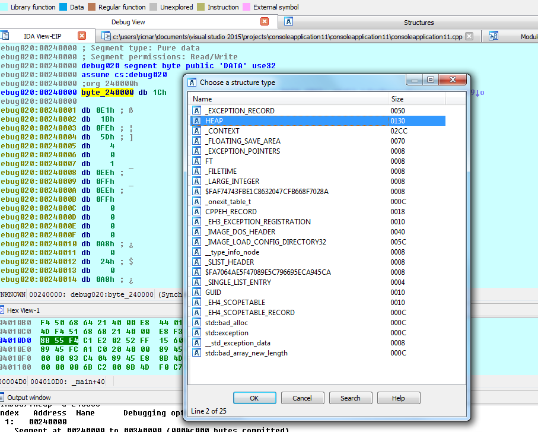
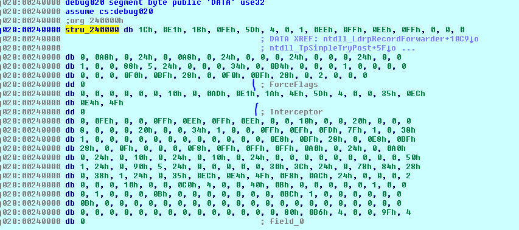
No queda muy lindo, pero ahí se ven los campos ForceFlags e Interceptor ambos a cero.
Coincide con
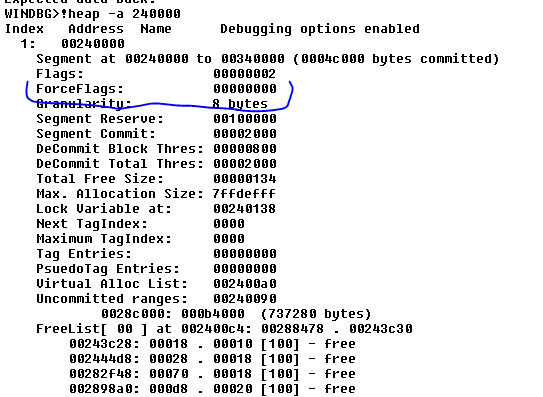
Y con
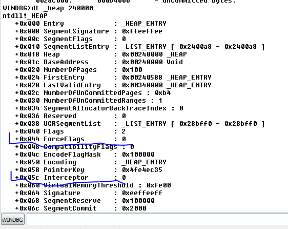
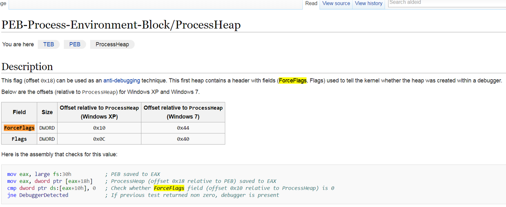
Copié el ejecutable a otra carpeta sin cerrar el anterior para comprobar y lo abrí directo en un segundo IDA no atacheando, sino directamente dentro del mismo y ese valor cambia a 0x40000060, es un valor que indica si está siendo debuggeado.
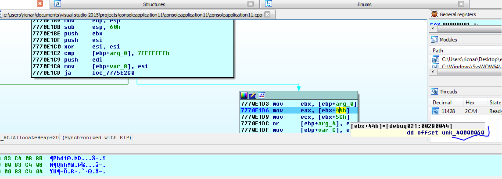
En el que se atacheo
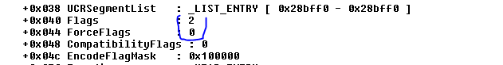
En el que abrí en el debugger.
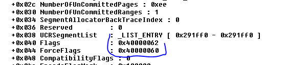
Allí dice que entre otras cosas se puede usar como anti-debugger.
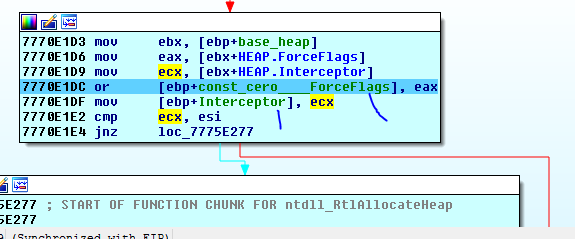
Vemos que el argumento que era cero lo reúsa haciendo OR con ForceFlags, de esta forma como era cero quedara valiendo ForceFlags.
Y ECX que tenía Interceptor lo guarda en var_C por eso la renombro, aunque no encontré detalle de para que sirve ya veremos, lo que si vi que no varía si está siendo debuggeado o no vale 0 en ambos casos.
Como Interceptor en mi caso vale cero y ESI vale cero, salta por la flecha roja ya que son iguales.
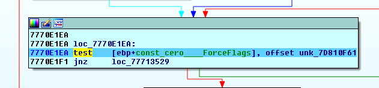
Allí hace test de ForceFlags que es cero contra la constante 7d810f61 el resultado será cero y ira por la flecha roja. (si se abrió en un debugger ira por la flecha verde)
Compara si el size es cero en nuestro caso es 0x10 asi que va por acá.
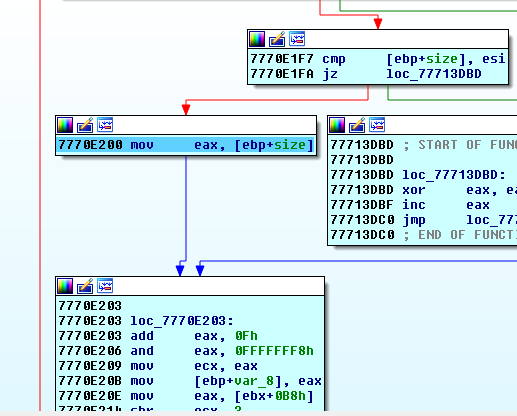
Le suma 0xf y luego hace AND con -8 con lo cual queda 0x18, que sería el size completo a alocar sumándole el header y para que sea múltiplo de 8.
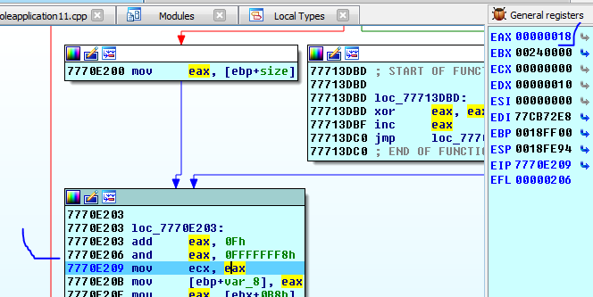
Queda en EAX el size full a 18.
Luego guarda en var_8 ese size asi que lo renombro.
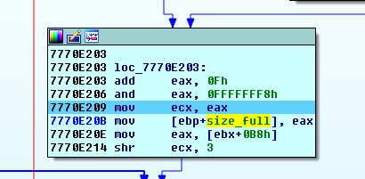
Luego lee el campo 0xb8 que era BlockIndex, asi que lo renombro en la estructura y aqui apreto T para que lo tome.
# +0x0b8 BlocksIndex : Ptr32 Void
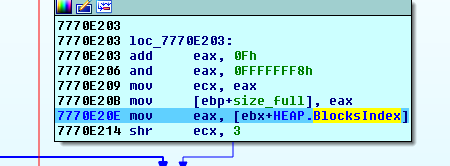
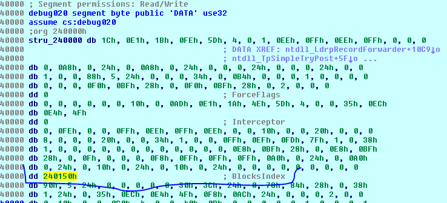
Asi que ese valor es un puntero que vale 0x240150 en mi caso.
Recordemos que
shr eax, 3 ;Signed division by 8
Y eso es lo que hace divide el size_full por 8, recordemos también que el size que figuraba en los encabezados como size total había que multiplicarlo por 8 para hallar el total del size del bloque.
Por ejemplo copiado de otro tute anterior un UserSize de 0x10, terminaba siendo un size total de 0x3 al que multiplicándolo por 8 daba el total de bytes.
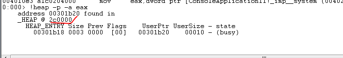
Python>hex(0x3*0x8)
0x18
Acá es la operación inversa del size full halla ese 0x3 al dividir por 0x8.
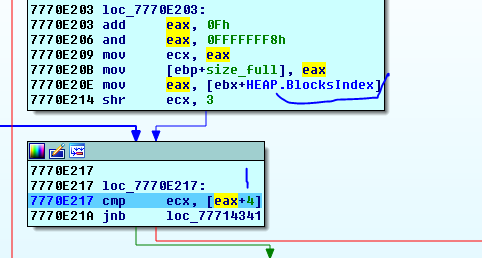
Vemos que ahora empieza a trabajar con la estructura BlocksIndex que habíamos visto en el tutorial pasado. (la imagen siguiente es del tutorial anterior)
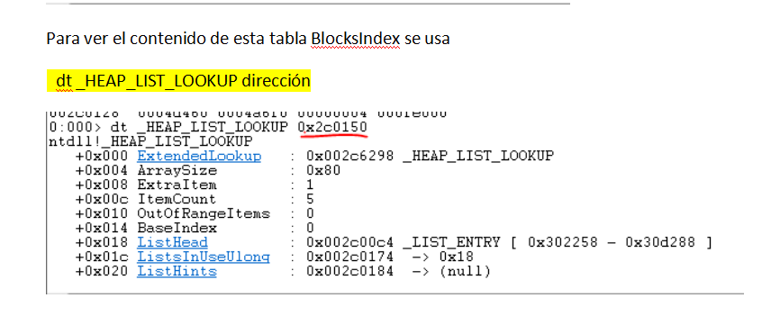
Asi que podemos crear una estructura vacía nueva de 0x24 bytes asi entra el ultimo dword.
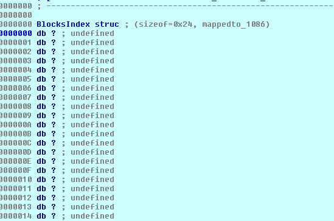
Asi que ahora apreto T en la instrucción y elijo esta nueva estructura.
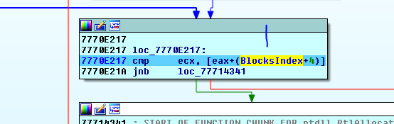
Ahora me queda renombrar el campo ese que está en 0x4 era ArraySize.
Como EAX apuntaba al inicio de esta estructura puedo ir allí en la memoria y asignarle la misma con ALT mas Q.
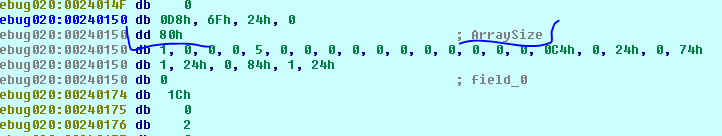
Vemos que el ArraySize es 0x80 en este caso, el resto de los campos esta sin definir aun, por eso se ve feo.
Vemos que como es menor no pasa por los bloques rosados
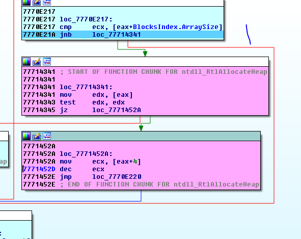
Vemos que estamos en esta parte
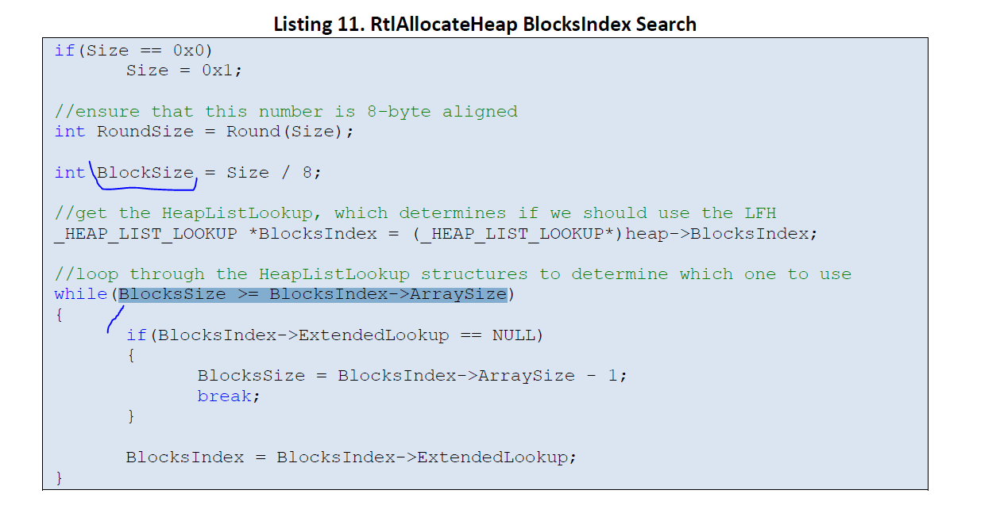
Aquí el size full dividido 8 lo llama BlockSize, nosotros aun lo tenemos en ECX y no se guardó solo se comparó, y vemos que allí también lo hace, compara contra el ArraySize igual que el nuestro.
Vemos que le resta 1 quedando 0x7f y lo vuelve a comparar con 0x3 que está en ECX.
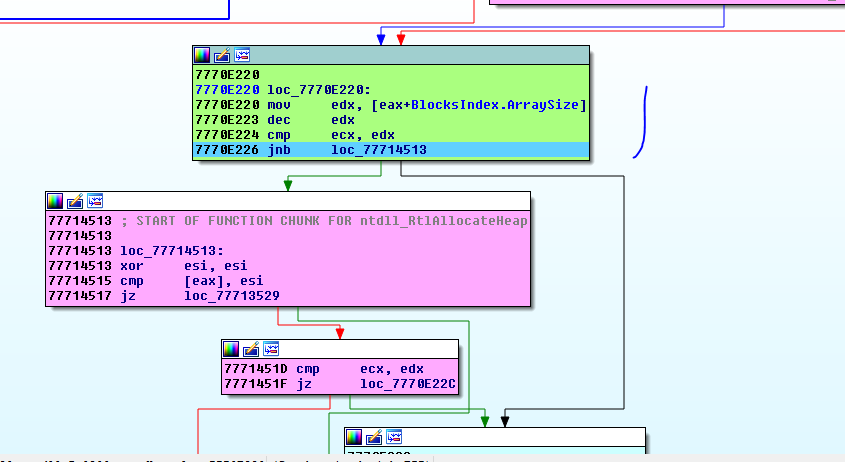
Como sigue siendo menor no va por los bloques rosados.
Ahora lee el campo 0x14 de BlockList que era BaseIndex asi que lo renombro.
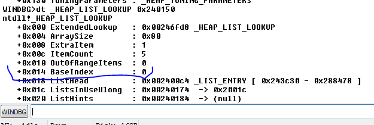
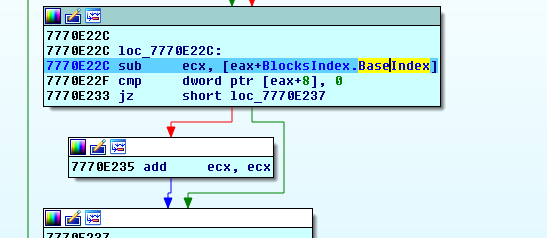
Como BaseIndex es cero ECX sigue siendo 0x3 o sea el BlockSize.
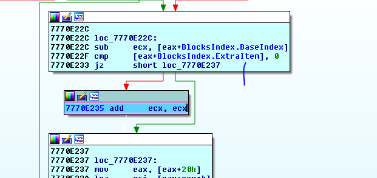
Como el campo ExtraItem que está en 0x8 offset vale 1 (no repetiré como renombrarlo en la estructura) llegamos al ADD ECX, ECX donde multiplica por 2 el valor del BlockSize.
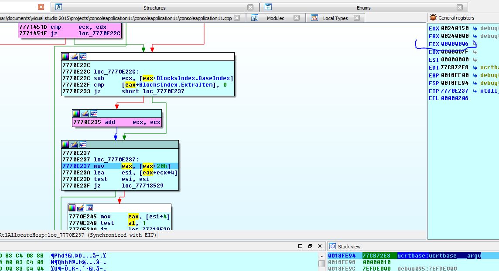
Luego usa el offset 0x20 ListHints.
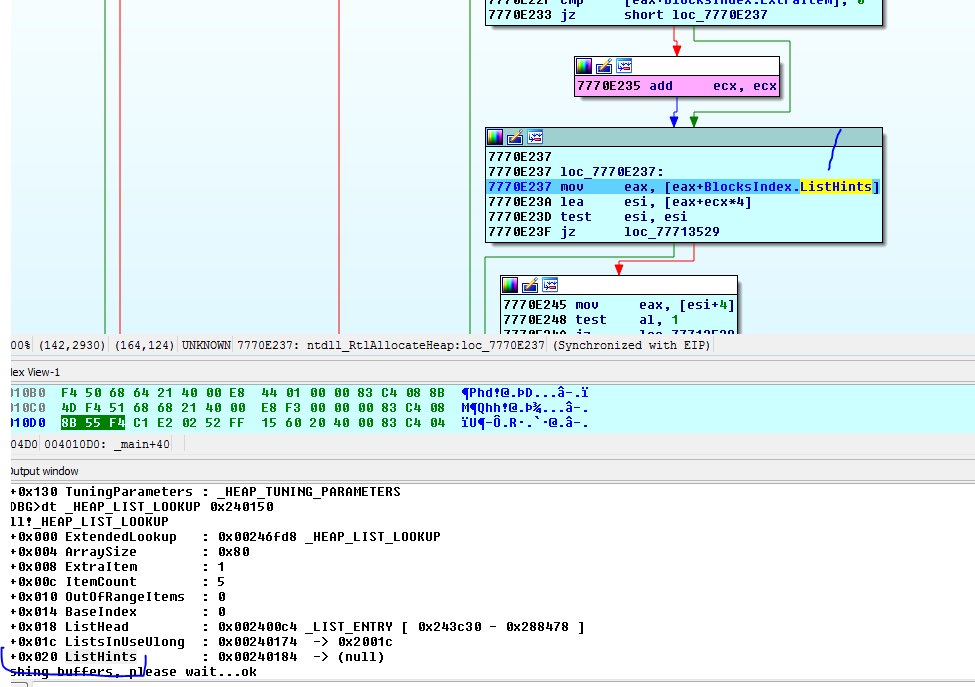
Al 0x6 lo multiplica por 4 y le suma al puntero ListHints queda en ESI 0x24019c
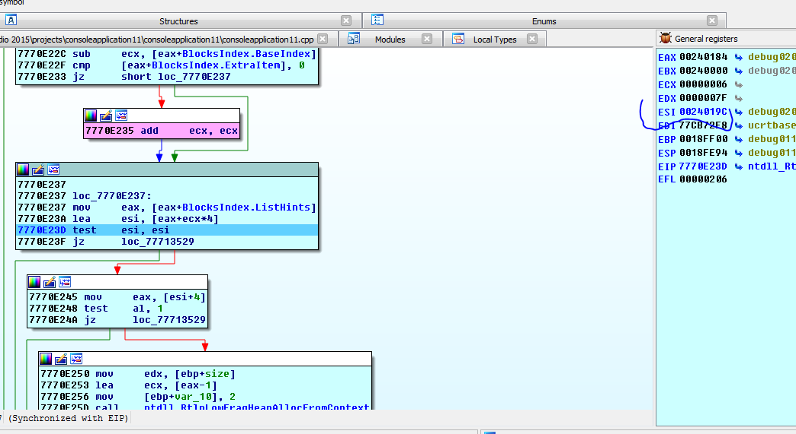
ListHints apunta a las Freelist que es otro tipo de allocacion mas sencilla ya veremos por ahora veamos que hace.
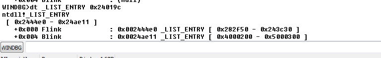
Así que podemos crear una nueva estructura de 8 bytes, pero en mi IDA ya la tenía (si no la crean)
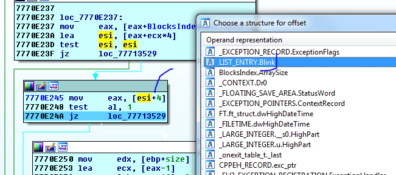
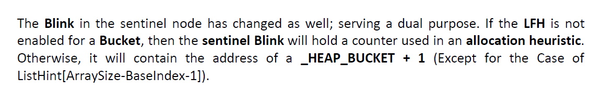
O sea, si LFH no está habilitado, el Blink tiene un contador y si está habilitado tiene un puntero. (HEAP_BUCKET+1)
Bueno ya veremos la cuestión es que compara si Al es 1 para ver si es un contador que está en 1.
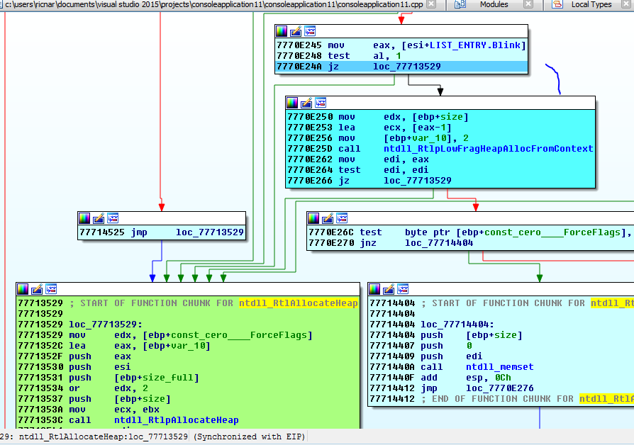
RtlpAllocateHeap o RtlpLowFragHeapAllocFromContext
Si es 1 va a ese bloque verde con una llamada a RtlpAllocateHeap y si no como en mi caso va al bloque celeste que va a RtlpLowFragHeapAllocFromContext.
O sea que ciertas cosas vamos viendo en nuestro caso comparo el size 0x3 contra 0x80 y como era menor y el AL del Blink era diferente del byte 0x1 llegamos por acá a algo que parece que maneja el LFH.
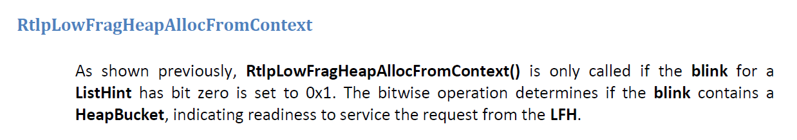
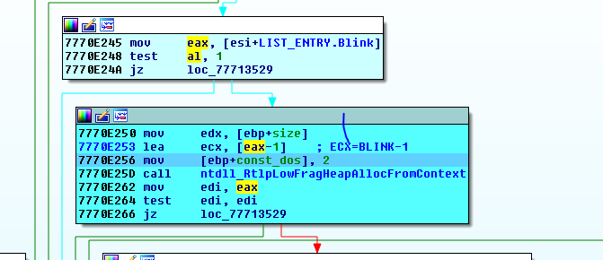
ECX tiene el puntero que había en BLINK-1 y en EDX está el UserSize 0x10.
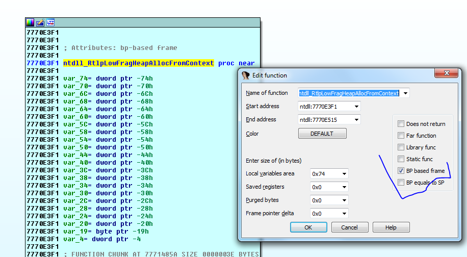
Ya que en la función no mostraba las variables y eran basadas en EBP (eran variables ebp - x), lo cambie poniendo la tilde ahí.
Recordemos que el Blink tenia el valor HEAP_BUCKET+1 o sea que restándole 1 quedaría (HEAP_BUCKET) asi que renombro la variable a HEAP_BUCKET.
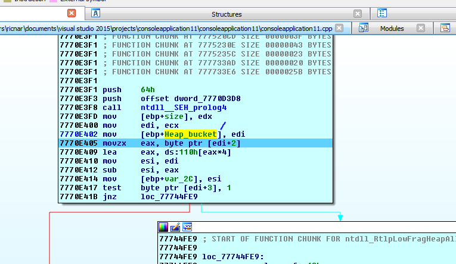
O sea que EDI es la base de la estructura HEAP_BUCKET la creare, parece tener 0x3 bytes.
Bueno el SizeIndex es 2 lo mueve a EAX
lea eax, ds:110h[eax*4]
Multiplica el 0x2 por 4 y le suma 0x110 y luego se lo resta al Heap_Bucket hallado y lo guarda en var_2c.
Esa dirección que guarda en var_2c es el inicio de la tabla LFH, ya que Heap_Bucket esta en 0x110 y el 8 debe ser porque está dentro de la tabla de los Buckets, de esta forma en var_2c guarda el valor 0x24acf8 que era el inicio de la tabla LFH.
Lo que está haciendo es lo que dice allí, tratando de hallar la dirección del LFH para este bucket, usando el SizeIndex.
Obviamente estamos en esa parte solo que en mi caso no es igual a uno y sigue por aquí.
Vemos que llega al LEA donde por ahora EAX vale cero ya que viene de una multiplicación de 0x3418 con const_cero y suma ESI que era el inicio de la tabla LFH y le suma 0x310.
Recordemos que desde LFH el offset 0x310 es _HEAP_LOCAL_DATA.
Esa cuenta la guarda en var_44 renombro HEAP_LOCAL_DATA.
La idea es que está tratando de localizar esas estructuras ya veremos si podemos localizar e identificarlas.
Bueno tenemos que hacer una estructura para HEAP_LOCAL_DATA.
Creo una estructura de 0x22 aunque seguro será mucho más por ahora servirá.
Vemos que a partir del offset 0x18 están las estructuras hay 0x128 de ellas
[128] _HEAP_LOCAL_SEGMENT_INFO
Vemos que está pivoteando a través de esas 128 estructuras usando SizeIndex como índice al cual lo multiplica por 0x68 y luego se lo suma para hallar la dirección de ese SegmentInfo.
Quiere decir que la direccion3 es HEAP_LOCAL_SEGMENT_INFO.
Así que haremos una estructura más de 0x64.
Bueno dentro de
ntdll!_HEAP_LOCAL_SEGMENT_INFO
+0x000 Hint : Ptr32 _HEAP_SUBSEGMENT
El primer campo que intenta usar allí lo dice es el Hint y ese es el que levanta aquí.
Y lo guarda en var_30 renombro a Hint.
Si el valor de Hint fuera cero intenta acá, buscando en ActiveSubsegment que es el siguiente campo.
Y si ese es cero intenta aquí
Vemos que en cualquiera de los tres casos guarda el resultado en la variable que nombramos Hint pero que puede ser cualquiera de los tres.
Bueno estábamos aquí
Renombramos Hint como resultado ya que puede ser cualquiera de los tres.
Allí vemos que muestra las tres posibilidades por ahora estamos en Hint.
Ese resultado debería ser _HEAP_SUBSEGMENT.
Allí me dice que _HEAP_LOCAL_SEGMENT_INFO está en 0x24b0f0 y que 0x282660 _HEAP_USERDATA_HEADER y en 0x08 esta INTERLOCK_SEQ.
Ya estamos llegando uf.
Allí agregue la estructura
Allí veo que halla con LEA la dirección de _INTERLOCK_SEQ
Por ahora la creo de 4 bytes
Vemos que puede leer el campo cero como word o como dword, se complica para el nombre, en mi caso lee el DWORD o sea el valor 0x56000d (ESTE VALOR ES MUY IMPORTANTE)
Agrego el campo Sequence
Testea DI que tiene Depth que es 0d en mi caso.
Allí lee UserBlocks que es el offset 0x4 de HEAP_SUBSEGMENT.
Compara el EDX que tenía el LocalInfo calculado con el puntero de HEAP_SUBSEGMENT.localinfo y deberían ser iguales.
Como son iguales va a este bloque
Bueno no me voy a poner a hacer todas esas cuentas, pero es obvio que lo que hace es sacar el primer bloque libre del size pedido a partir de los valores de la estructura _INTERLOCK_SEQ, y cuando sale de ese bloque lo guarda aquí.
ECX vale allí 282918 que si miro la lista de bloques de size 0x10.
!heap -flt s 0x10
En la lista esta
Y es el primero de este LFH porque los anteriores de size 0x10 que dicen free, son de otro LFH de dirección menor posiblemente correspondientes al otro heap.
Vemos que allí a la dirección del chunk 0x282918 sin el header, le resta 8, y queda la dirección del bloque completa con header 0x282910.
La estructura que no agregamos fue la de LFH, lo hare.
Ahora usa el campo 0x24 que es hallar la dirección base del HEAP 0x240000 que la mueve a ESI.
BlockUnits era 0x3 en el SHL EAX, 3 es similar a multiplicar por 8 asi que
A eso le resta el Usersize
Y a ese valor lo compara contra 0x3f como es menor vamos a.
Allí esta escribiendo en el header del chunk LFH, no hicimos la estructura.
Pisa el byte 7 lo cambia de 0x80 a 0x88
Vemos que ahora marca como que esta ocupado, si vemos el siguiente libre de 282928.
Vemos que los libres están con el valor 0x80 y los ocupados con el valor 0x88.
La cuestión es que el valor que esta en INTERLOCK_SEQ y que decide cual es el próximo bloque a entregar esta en 0x282a78 (0x8 a partir del inicio de la estructura HEAP_SUBSEGMENT)
Antes valía
Y ahora vale
Vemos que la distancia desde el inicio del chunk que puedo escribir, al que decide cual es el próximo que me va a entregar es solo 0x168 y es un bloque de 0x10 que si se overflodea se puede llegar a pisar.
Lo que decíamos en el tute anterior se verifica aqui.
A ese valor UserBlocks 0x282660 que lo mueve a ESI y apunta a la estructura HEAP_USER_DATA_HEADER, se le suma aquí EAX que sale luego de varias cuentas del EDI que viene de aquí.
Quiere decir que la próxima vez que se pida un size 0x010, moverá a EDI el valor 0x59000c si es que no esta pisado.
Lo mueve a EAX y luego SHR EAX,0d
Equivalent to dividing by 2 la 0d =08192 decimal o sea 0x2000 hexa
O sea que es equivalente a 0x59000c dividido 0x2000 que da 0x2c8
A eso el hace AND 0x7FFF8
Queda igual luego lo suma a ESI que vale 0x282660
Y me da 0x282928 que es el siguiente libre

Quiere decir que si hay un overflow podemos alterar esta cuenta pisando el valor dentro del INTERLOCK_SEQ y que me de un bloque anterior, eso lo probaremos en la siguiente parte.
Hasta la siguiente
Ricardo Narvaja